YA-TING WANG |
汪亞婷
YA-TING WANG |
Leading design efforts on Adobe’s new capability — Real-Time Customer Data Platform
Key Role: Designing and launching various features across Segments, Profiles, and Identifies for Adobe Experience Platform. Scaling design by developing pattern and accessibility guidelines for the design organization.
At Condé Nast, I design the UX and UI for our in-house CMS — Copilot.
Key Role: In charge of user research and prototype making to help the team decide on a MVP; conducted user testing to evaluate hypotheses; and occasionally implemented styling in code.
To improve the fundamental UX of the platform, we decided to optimize the searching experience where most user time and actions were spent on.
The navigation was divided based on two main actions: search and create with all the content unorganized which required users to click through many filters.
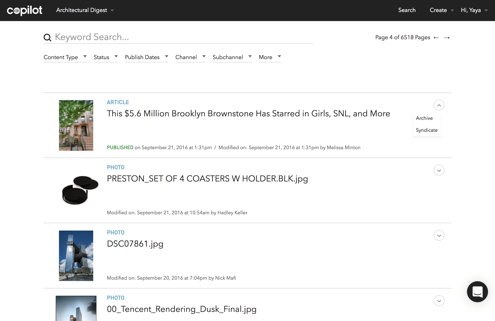 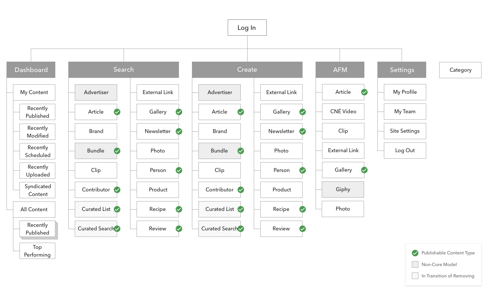After combing through the content types across multiple brands, I proposed a new IA that organized the content types into 4 main buckets. It was tested and well agreed upon by product and users.
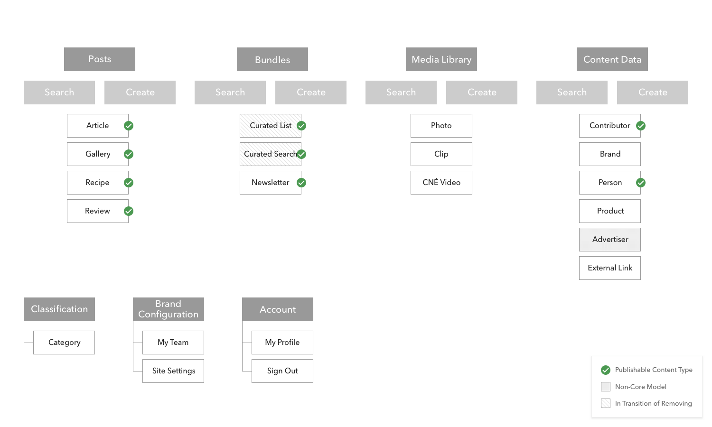The separation of the content types allows users to focus on the different types of information.
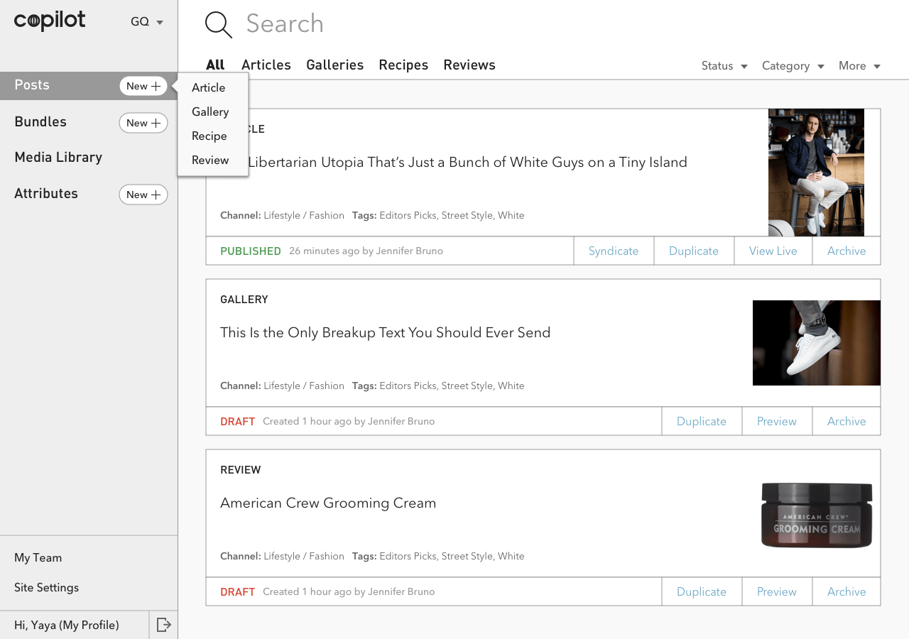 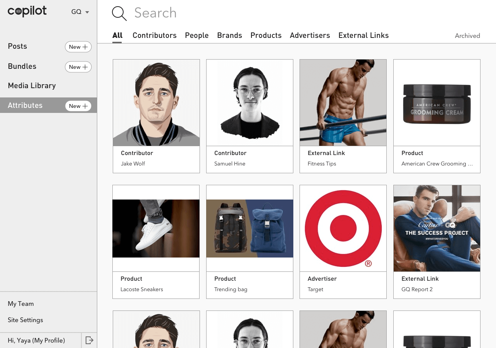We then introduced the collapsible left-nav-bar component to incorporate future extensibility.
To enhance the readability and user-friendliness of the platform, I proposed a new visual system to the team. I started with a moodboard with a strong aviation theme to solidify the brand identity.
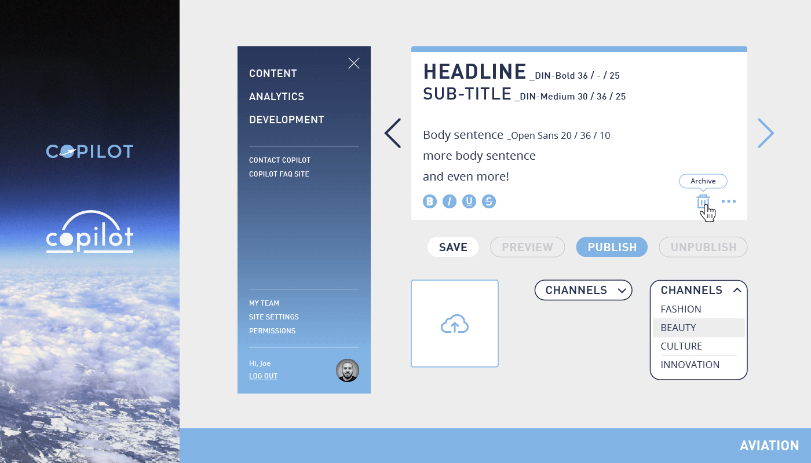Beyond the re-skinned visuals, the main goal for this project was to apply best UI practices, such as clarifying the actionable items.
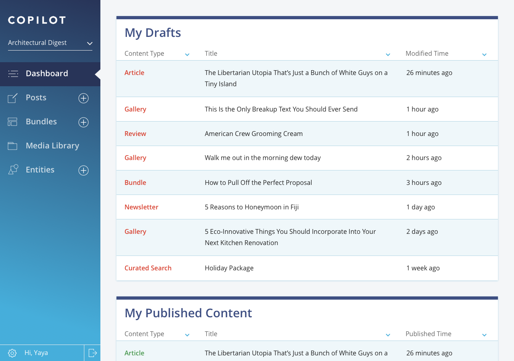 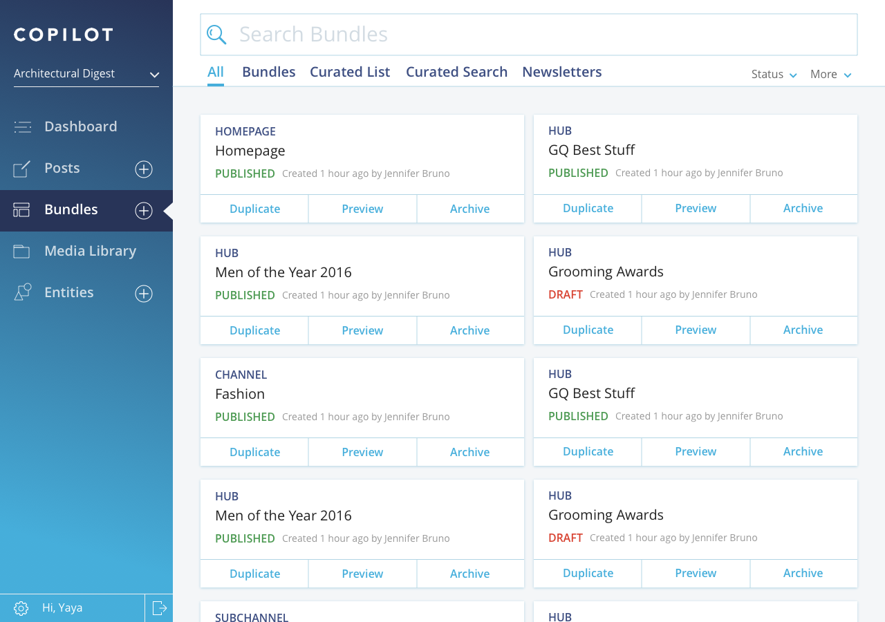
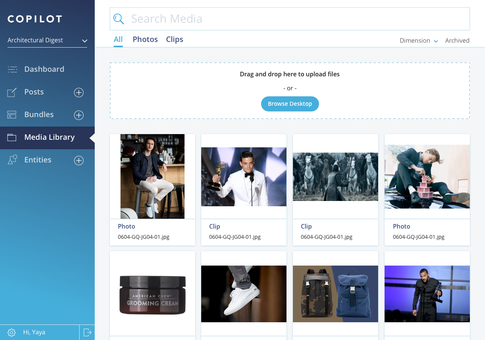
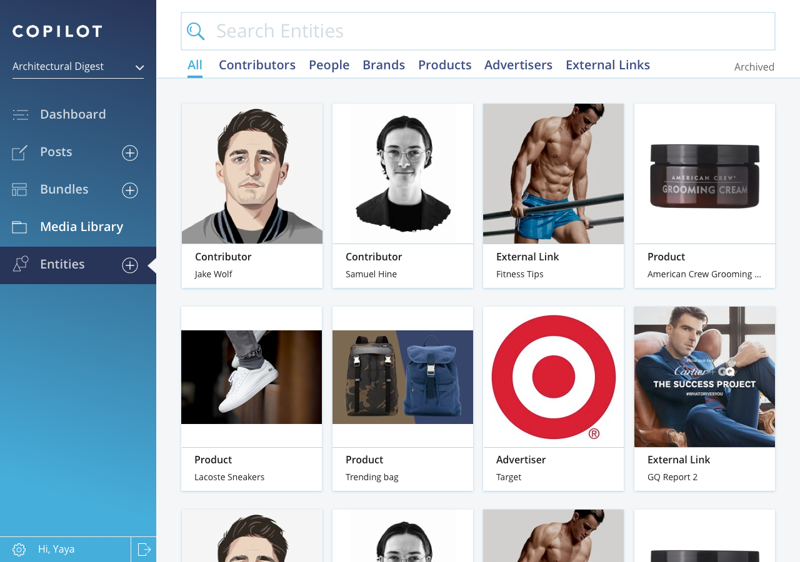
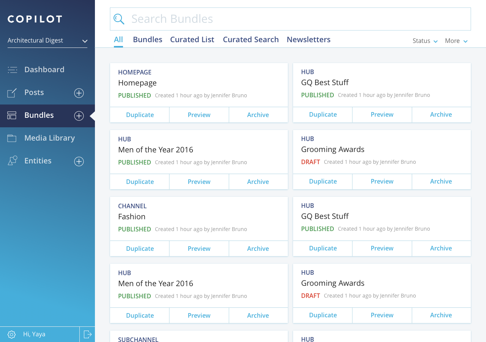
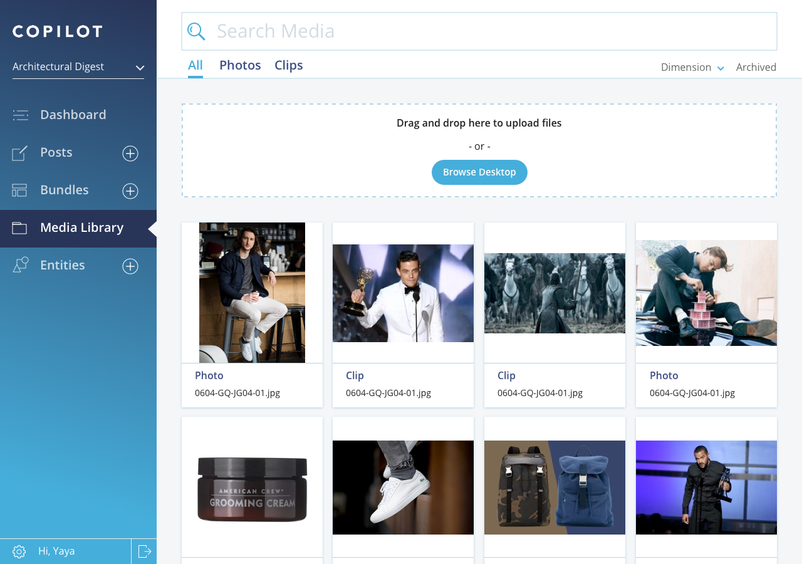
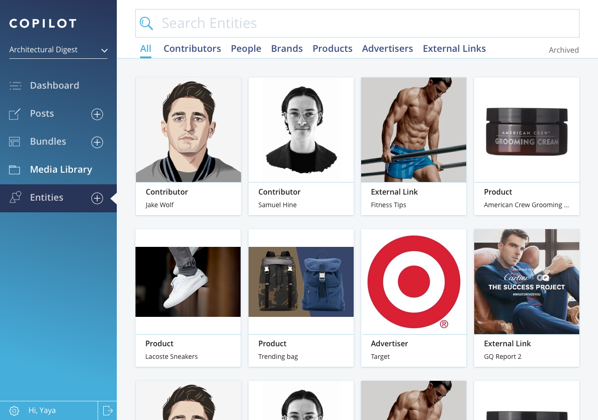
The new icon design
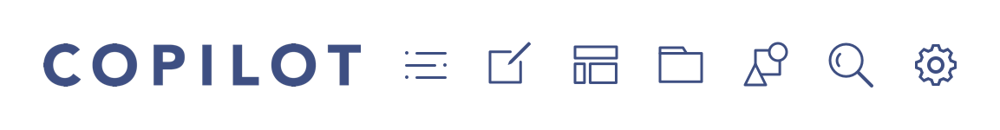We developed a tool embeded inside the CMS to help editors optimize SEO on their content. Our survey showed a 87% satisfactory rate from the users. One user said she felt empowered to workshop ideas inside Copilot with the SEO Score Card.
To help editors better organize their content as well as to prepare for future machine learning training, we developed the category-picker component that includes the ability to reorder the relevancy.
A design exercise to showcase my design thinking and process.
Key Role: User Interface Design, Visual Design, Art Direction
Read Medium PostTry the following tasks when clicking through the prototype:
You may also see a complete list of the UI screens here.
To learn about the process, please read the Medium Post.
Introducing the Condé Nast Traveler city guides with connoisseur curated itineraries.
Key Role: Researched and defined user personas; produced concepts and wireframes; created designs following the brand’s visual language.
We collected site visitors' demographics and composed them into stories for personas.


We then broke down the travel process into stages and defined opportunities for user engagement.

I created early stage wireframes and visual mockups.

Since maps are a key element to the city guide, we made sure the interaction was simple and clear for both mobile and desktop.


A responsive website redesign to empower editors and create engaging storytelling experiences.
Key Role: Main UX designer from research, IA, concepts, wireframes, to QA in code.
The redesign has increased AD's digital audience by 67% along with editorial strategy.
Defined new opportunities through stakeholder interviews and user analytics.

I conducted a card sorting exercise with the editorial team to re-organize site structure.

The homepage was designed to enable editors to use photography to create an immersive experience.

Designed and style-coded the company's blog site for the engineering team.
View LiveI presented the 3 iterations below to the engineering team before we landed on the current design.


To celebrate the very first blog post written by our VP of Engineering, I created this gif for his post.

I enjoy creating simple graphics that tell compelling stories.

Coffeed is a charity-focused coffeehouse. They source the produce from Brooklyn Grange, the rooftop farm on top of where COFFEED is located, as well as donating coffee grounds for compost. Fascinated by this micro ecosystem, I designed this diagram to help promote their sustainable coffee drinking culture.
Sundays is a nail studio focusing on wellness. The logo aims to resonate with the brand's high-quality, clean, and simple image.


My secret job at Condé Nast — swag production.
I have designed 8 company t-shirts for various occasions: website redesign and internal project launches, as well as for the company's summer party.

Slade Architecture Summer Party Poster
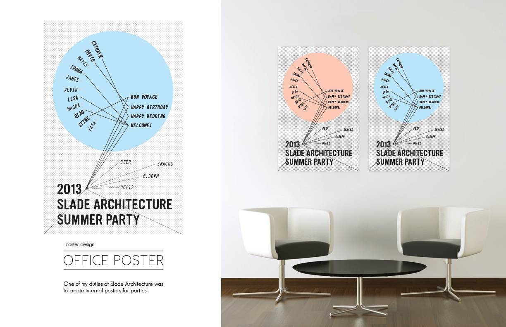Copilot Logo Geometry Cleanup

Meat Cut Diagram for Kitchen Cabinet Covers
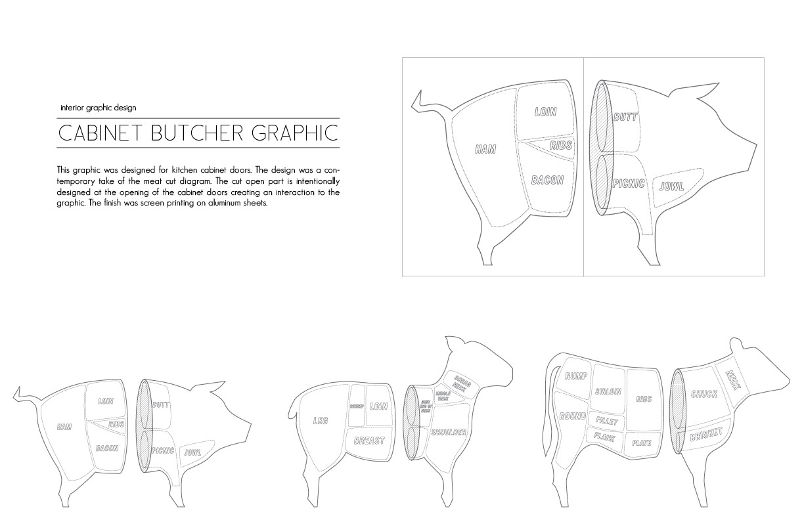I ♥ wood.


I help teams launch products validated by user feedback iteratively. I like to take inspirations from art, nature, and history.
Senior Product Designer @ Adobe
Experience Designer @ Adobe
Product Designer @ Condé Nast
Designer / Marketing @ Slade Architecture